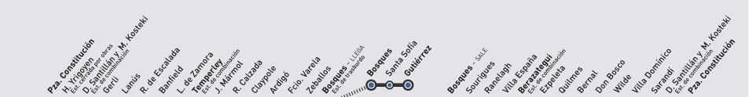

Mapa esquemático del recorrido
El servicio parte desde Plaza Constitución, atraviesa estaciones de combinación del corredor sur y continúa desde Bosques hacia Santa Sofía y Gutiérrez.
- Plaza ConstituciónTerminal y combinación
- Hipólito YrigoyenEstación intermedia
- GerliZona residencial
- LanúsCentro comercial
- Remedios de EscaladaConexión local
- BanfieldÁrea urbana
- Lomas de ZamoraCentro regional
- TemperleyEstación de combinación
- José MármolRamal a Bosques
- Rafael CalzadaAcceso barrial
- ClaypoleCombinación local
- ArdigóEstación intermedia
- Florencio VarelaCentro urbano
- ZeballosConexión vecinal
- BosquesInicio de la extensión a Gutiérrez
- Santa SofíaParada indicada en el cuadro horario
- Juan María GutiérrezTerminal de la extensión final
Referencia visual del recorrido
La línea muestra el recorrido vía Temperley y marca la extensión final Bosques - Santa Sofía - Gutiérrez.

Vista rápida para celular
Destinos principales
- Plaza Constitución: terminal de cabecera en CABA.
- Temperley: nodo de combinación de la Línea Roca.
- Bosques: estación de trasbordo hacia Gutiérrez.
- Juan María Gutiérrez: destino final del tramo suburbano.
Ubicación
El corredor une la zona sur de la Ciudad de Buenos Aires con partidos del sur del conurbano bonaerense, pasando por Lanús, Lomas de Zamora, Almirante Brown, Florencio Varela y Berazategui.
Ver ubicación en mapa
Tipo de transporte
Tren regional metropolitano eléctrico. La propuesta está pensada para una consulta rápida de estaciones, horarios y condiciones de viaje desde un Centro de Transporte Inteligente.